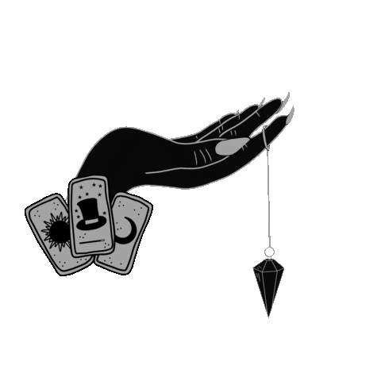

ЛИТА.
ТАРОЛОГ И РУНОЛОГ.
Профессиональная консультация Подскажет вам путь
5
Лет
Практики
∞
Проведенных консультации
100+
Постоянных клиентов
««Обо Мне»»
∞
Меня Зовут Лита.
- Гадаю более более пяти лет ежедневно.
- Проконсультировала множество людей с самыми различными ситуациями.
- Мои консультации на картах Таро и рунах помогут Вам разобраться в себе,В различных жизненных ситуациях, в отношениях с другими людьми.
- К консультациям я подхожу основательно, мои расклады очень подробные.
- Я отвечаю на все Ваши вопросы, чтобы у Вас их потом попросту не осталось.
- Зная свое будущее, Вы можете смело менять и преобразовывать его под себя, увеличивать свои счастливые возможности.
- Я обеспечу внимательный и бережный подход к Вашей ситуации, полную конфиденциальность.
Рассматриваю любые темы. - Вы можете обращаться ко мне с любыми вопросами, я отвечу на них максимально информативно и подробно.
««Мой Услуги Для Вас»»
Отношения
Вы можете посмотреть свои отношения с другими людьми. Романтические, дружеские, рабочие, семейные, соседские. В романтических отношениях вы сможете узнать будущее отношений с любимым человеком, их развитие. Также сможете понять, чего не хватает для гармонии, как исправить существующие проблемы. Если вы расстались с партнером, я могу рассмотреть вашу личную жизнь в целом и определить, помиритесь ли вы с бывшим или уже все? Я помогу вам в сложных ситуациях, например, когда в отношения вмешивается кто-то третий. Ситуация любовного треугольника, четырехугольника, вмешательство близких родственников. Вы поймете, какие чувства испытывает человек к вам, какие к другой женщине или к другому мужчине. Чем все закончится в итоге? Что вам лучше всего сделать в данной ситуации? И также отвечу на все волнующие вас вопросы по поводу отношений. Будет ли брак, какой он человек, можно ли ему доверять? Вопросы интима, вашей сексуальности. Духовной совместимости, совместной судьбы и жизни. Какие-то отдельные моменты, вроде причин ссор и конфликтов и то, как их исправить. И многое другое.
Вы можете посмотреть свои отношения с другими людьми. Романтические, дружеские, рабочие, семейные, соседские. В романтических отношениях вы сможете узнать будущее отношений с любимым человеком, их развитие. Также сможете понять, чего не хватает для гармонии, как исправить существующие проблемы. Если вы расстались с партнером, я могу рассмотреть вашу личную жизнь в целом и определить, помиритесь ли вы с бывшим или уже все? Я помогу вам в сложных ситуациях, например, когда в отношения вмешивается кто-то третий. Ситуация любовного треугольника, четырехугольника, вмешательство близких родственников. Вы поймете, какие чувства испытывает человек к вам, какие к другой женщине или к другому мужчине. Чем все закончится в итоге? Что вам лучше всего сделать в данной ситуации? И также отвечу на все волнующие вас вопросы по поводу отношений. Будет ли брак, какой он человек, можно ли ему доверять? Вопросы интима, вашей сексуальности. Духовной совместимости, совместной судьбы и жизни. Какие-то отдельные моменты, вроде причин ссор и конфликтов и то, как их исправить. И многое другое.
Закрыть окноРабота
Я помогу вам разобраться, что ждет вас на вашей работе. Какие отношения у вас с коллегами и начальством? Возможно ли повышение и карьерный рост? Тем ли делом вы занимаетесь? На верном ли пути находитесь? Если вы в замешательстве и не понимаете, чем хотите заниматься, я помогу вам найти дело своей жизни. Расклады на профориентацию, на учебу, на будущее и ваши таланты ждут вас у меня. Я также отвечу на вопросы о проблемах на работе, о том, как их исправить, как избежать возможных ошибок и неприятностей, что сделать, чтобы вас заметили. Вы узнаете, как поступать в случае интриг на работе, как защититься от сплетен. Также вы сможете задать вопросы о смене работы, о выборе между двумя вариантами. Если беспокоитесь о сокращении, я сделаю расклад на то, не уволят ли, и что сделать, чтобы минимизировать риски.
Я помогу вам разобраться, что ждет вас на вашей работе. Какие отношения у вас с коллегами и начальством? Возможно ли повышение и карьерный рост? Тем ли делом вы занимаетесь? На верном ли пути находитесь? Если вы в замешательстве и не понимаете, чем хотите заниматься, я помогу вам найти дело своей жизни. Расклады на профориентацию, на учебу, на будущее и ваши таланты ждут вас у меня. Я также отвечу на вопросы о проблемах на работе, о том, как их исправить, как избежать возможных ошибок и неприятностей, что сделать, чтобы вас заметили. Вы узнаете, как поступать в случае интриг на работе, как защититься от сплетен. Также вы сможете задать вопросы о смене работы, о выборе между двумя вариантами. Если беспокоитесь о сокращении, я сделаю расклад на то, не уволят ли, и что сделать, чтобы минимизировать риски.
Закрыть окноФинансы
Ваше материальное положение, расходы, доходы. Как избавиться от долгов? Как больше зарабатывать? Как увеличить прибыль? Какие у вас отношения с деньгами? Что вас ждет в финансовом плане на загаданный срок? Могут ли быть проблемы с деньгами? Как их избежать? Все это вы узнаете у меня.
Ваше материальное положение, расходы, доходы. Как избавиться от долгов? Как больше зарабатывать? Как увеличить прибыль? Какие у вас отношения с деньгами? Что вас ждет в финансовом плане на загаданный срок? Могут ли быть проблемы с деньгами? Как их избежать? Все это вы узнаете у меня.
Закрыть окноБудущее
Что ждёт вас через месяц, через полгода, через год? Что может быть через несколько лет? Расклады на будущее общие, включают в себя анализ основных сфер вашей жизни. Работы, денег, отношений, эмоционального состояния. И событий, которые будут происходить в эти сроки.
Что ждёт вас через месяц, через полгода, через год? Что может быть через несколько лет? дущее общие, включают в себя анализ основных сфер вашей жизни. Работы, денег, отношений, эмоционального состояния. И событий, которые будут происходить в эти сроки.
Закрыть окноПсихологические вопросы
Как избавиться от зависимостей или вредных привычек? Что делать, если тревожишься или находишься в апатии? Как помочь себе? Стоит ли вам идти к психологу? Хороший ли он специалист, поможет ли вам? Что принесет вам работа с ним? Как изменить свою жизнь? Что сделает вас счастливыми? И многие другие важные вопросы, которые только беспокоят вас, получат свой ответ. Я рассматриваю не только эти вопросы) Вы можете обращаться ко мне с любыми ситуациями, я обязательно помогу вам разобраться в них и отвечу на все ваши вопросы!
Как избавиться от зависимостей или вредных привычек? Что делать, если тревожишься или находишься в апатии? Как помочь себе? Стоит ли вам идти к психологу? Хороший ли он специалист, поможет ли вам? Что принесет вам работа с ним? Как изменить свою жизнь? Что сделает вас счастливыми? И многие другие важные вопросы, которые только беспокоят вас, получат свой ответ. Я рассматриваю не только эти вопросы) Вы можете обращаться ко мне с любыми ситуациями, я обязательно помогу вам разобраться в них и отвечу на все ваши вопросы!
Закрыть окно««ОТЗЫВЫ»»
Литочка огромное спасибо вам за то что вы меня пройнформировали во всех мойх вопросах, Я не ожидала получить такой щикарный ответ на все вопросы. Как будто вы меня знаете с самого начала. Все мой отношения как будто вы проживаете вместе сао мной,Вы настолько всё правильно и чётко обьясняете и видите, что я досихпор нахожусь в шоке.
Я вам признательна,Вы очень поддержали. Я что в прощлый раз была в восторге,что сейчас. Моя подруга пищит от вас И я тоже.Спасибо Вам большое. Как всегда все подробно,Понятно и успокаивающе. Вы даже не представляете,Как меня спасаете сейчас. Я то на дне,то всплываю,то снова тону.
Ну что ж, Трудности в моей жизни были,есть и будут,без них скучно. Спасибо большое за прогноз,есть над чем подумать и на что обратить внимание. Предупрежден,значит вооружен.